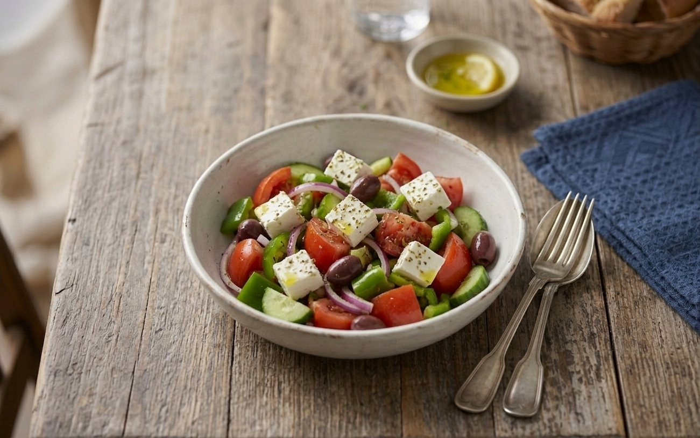
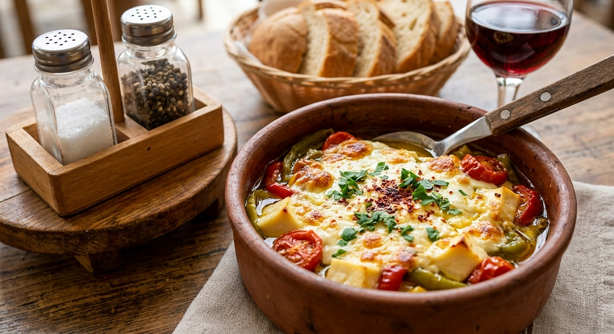
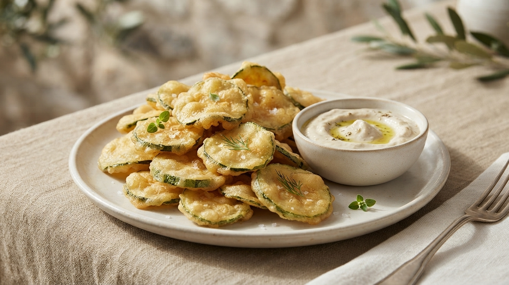
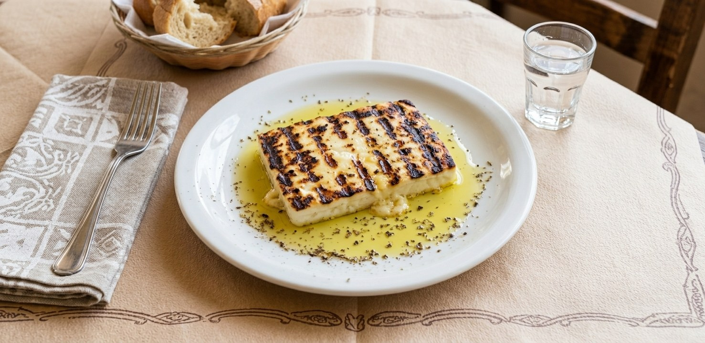
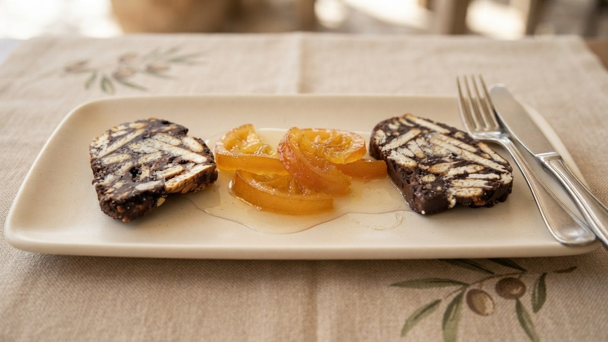
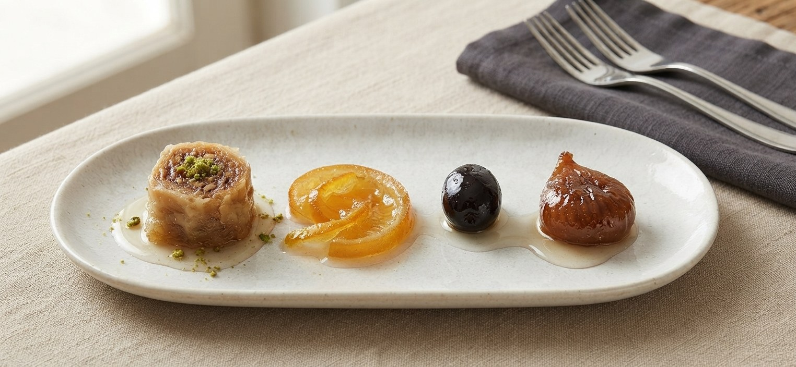

Made Here
Made With Care
A closer look at what we make ourselves, salads, sides and a sweet finish, prepared simply and served with care.






A closer look at what we make ourselves, salads, sides and a sweet finish, prepared simply and served with care.





